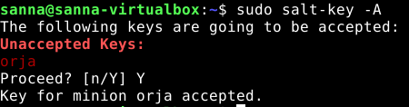

Selvitin virtualikoneellani olevan Debianin version näin (ohje teron läksyt kohdassa)
sanna@sanna-virtualbox:~$ cat /etc/*version /etc/*release
11.3
PRETTY_NAME="Debian GNU/Linux 11 (bullseye)"
NAME="Debian GNU/Linux"
VERSION_ID="11"
VERSION="11 (bullseye)"
VERSION_CODENAME=bullseye
ID=debian
HOME_URL="https://www.debian.org/"
SUPPORT_URL="https://www.debian.org/support"
BUG_REPORT_URL="https://bugs.debian.org/"
Koneestani saan tietoa myös näin
sanna@sanna-virtualbox:~$ uname -a
Linux sanna-virtualbox 5.10.0-13-amd64 #1 SMP Debian 5.10.106-1 (2022-03-17) x86_64 GNU/Linux
Saltin version saan selville näin (Karvinen 2021 Salt Run Command Locally), itse saltin olin asentanut lokaalisti jo 30.3.2022 oppitunnilla käskyllä sudo apt-get -y install salt-minion
sanna@sanna-virtualbox:~$ sudo salt-call --version
salt-call 3002.6
Linux palvelimet kurssilla opin, että koneen tietoja saa komennolla lshw (https://jyrinsan.github.io/linuxpalvelimet/h1.html, tehtävä b), asennan käskyn ja kokeilen ensin ilman salttia, että käsky toimii
sanna@sanna-virtualbox:~$ sudo lshw -short -sanitize
sudo: lshw: command not found
sanna@sanna-virtualbox:~$ sudo apt-get install -y lshw
Reading package lists... Done
Building dependency tree... Done
Reading state information... Done
The following NEW packages will be installed:
lshw
0 upgraded, 1 newly installed, 0 to remove and 70 not upgraded.
Need to get 279 kB of archives.
After this operation, 870 kB of additional disk space will be used.
Get:1 http://deb.debian.org/debian bullseye/main amd64 lshw amd64 02.18.85-0.7 [279 kB]
Fetched 279 kB in 0s (1 211 kB/s)
Selecting previously unselected package lshw.
(Reading database ... 231548 files and directories currently installed.)
Preparing to unpack .../lshw_02.18.85-0.7_amd64.deb ...
Unpacking lshw (02.18.85-0.7) ...
Setting up lshw (02.18.85-0.7) ...
Processing triggers for man-db (2.9.4-2) ...
sanna@sanna-virtualbox:~$ sudo lshw -short -sanitize
H/W path Device Class Description
=======================================================
system VirtualBox
/0 bus VirtualBox
/0/0 memory 128KiB BIOS
/0/1 memory 4GiB System memory
/0/2 processor AMD Ryzen 5 PRO 4650U with Radeon Gr
/0/100 bridge 440FX - 82441FX PMC [Natoma]
/0/100/1 bridge 82371SB PIIX3 ISA [Natoma/Triton II]
/0/100/1.1 scsi1 storage 82371AB/EB/MB PIIX4 IDE
/0/100/1.1/0.0.0 /dev/cdrom disk CD-ROM
/0/100/1.1/0.0.0/0 /dev/cdrom disk
/0/100/2 display SVGA II Adapter
/0/100/3 enp0s3 network 82540EM Gigabit Ethernet Controller
/0/100/4 generic VirtualBox Guest Service
/0/100/5 multimedia 82801AA AC'97 Audio Controller
/0/100/6 bus KeyLargo/Intrepid USB
/0/100/6/1 usb1 bus OHCI PCI host controller
/0/100/6/1/1 input USB Tablet
/0/100/7 bridge 82371AB/EB/MB PIIX4 ACPI
/0/100/d scsi2 storage 82801HM/HEM (ICH8M/ICH8M-E) SATA Con
/0/100/d/0.0.0 /dev/sda disk 64GB VBOX HARDDISK
/0/100/d/0.0.0/1 /dev/sda1 volume 51GiB EXT4 volume
/0/100/d/0.0.0/2 /dev/sda2 volume 8438MiB Linux swap volume
/0/3 input PnP device PNP0303
/0/4 input PnP device PNP0f03
Kokeilen ajaa käskyn saltilla
sanna@sanna-virtualbox:~$ sudo salt-call --local -l info state.single cmd.run 'lshw -short -sanitize'
[INFO ] Loading fresh modules for state activity
[INFO ] Running state [lshw -short -sanitize] at time 20:05:34.029363
[INFO ] Executing state cmd.run for [lshw -short -sanitize]
[INFO ] Executing command 'lshw' in directory '/root'
[INFO ] {'pid': 1808, 'retcode': 0, 'stdout': "H/W path Device Class Description\n=======================================================\n system VirtualBox\n/0 bus VirtualBox\n/0/0 memory 128KiB BIOS\n/0/1 memory 4GiB System memory\n/0/2 processor AMD Ryzen 5 PRO 4650U with Radeon Graphics\n/0/100 bridge 440FX - 82441FX PMC [Natoma]\n/0/100/1 bridge 82371SB PIIX3 ISA [Natoma/Triton II]\n/0/100/1.1 scsi1 storage 82371AB/EB/MB PIIX4 IDE\n/0/100/1.1/0.0.0 /dev/cdrom disk CD-ROM\n/0/100/1.1/0.0.0/0 /dev/cdrom disk \n/0/100/2 display SVGA II Adapter\n/0/100/3 enp0s3 network 82540EM Gigabit Ethernet Controller\n/0/100/4 generic VirtualBox Guest Service\n/0/100/5 multimedia 82801AA AC'97 Audio Controller\n/0/100/6 bus KeyLargo/Intrepid USB\n/0/100/6/1 usb1 bus OHCI PCI host controller\n/0/100/6/1/1 input USB Tablet\n/0/100/7 bridge 82371AB/EB/MB PIIX4 ACPI\n/0/100/d scsi2 storage 82801HM/HEM (ICH8M/ICH8M-E) SATA Controller [AHCI mode]\n/0/100/d/0.0.0 /dev/sda disk 64GB VBOX HARDDISK\n/0/100/d/0.0.0/1 /dev/sda1 volume 51GiB EXT4 volume\n/0/100/d/0.0.0/2 /dev/sda2 volume 8438MiB Linux swap volume\n/0/3 input PnP device PNP0303\n/0/4 input PnP device PNP0f03", 'stderr': ''}
[INFO ] Completed state [lshw -short -sanitize] at time 20:05:34.413351 (duration_in_ms=383.987)
local:
----------
ID: lshw -short -sanitize
Function: cmd.run
Result: True
Comment: Command "lshw -short -sanitize" run
Started: 20:05:34.029364
Duration: 383.987 ms
Changes:
----------
pid:
1808
retcode:
0
stderr:
stdout:
H/W path Device Class Description
=======================================================
system VirtualBox
/0 bus VirtualBox
/0/0 memory 128KiB BIOS
/0/1 memory 4GiB System memory
/0/2 processor AMD Ryzen 5 PRO 4650U with Radeon Graphics
/0/100 bridge 440FX - 82441FX PMC [Natoma]
/0/100/1 bridge 82371SB PIIX3 ISA [Natoma/Triton II]
/0/100/1.1 scsi1 storage 82371AB/EB/MB PIIX4 IDE
/0/100/1.1/0.0.0 /dev/cdrom disk CD-ROM
/0/100/1.1/0.0.0/0 /dev/cdrom disk
/0/100/2 display SVGA II Adapter
/0/100/3 enp0s3 network 82540EM Gigabit Ethernet Controller
/0/100/4 generic VirtualBox Guest Service
/0/100/5 multimedia 82801AA AC'97 Audio Controller
/0/100/6 bus KeyLargo/Intrepid USB
/0/100/6/1 usb1 bus OHCI PCI host controller
/0/100/6/1/1 input USB Tablet
/0/100/7 bridge 82371AB/EB/MB PIIX4 ACPI
/0/100/d scsi2 storage 82801HM/HEM (ICH8M/ICH8M-E) SATA Controller [AHCI mode]
/0/100/d/0.0.0 /dev/sda disk 64GB VBOX HARDDISK
/0/100/d/0.0.0/1 /dev/sda1 volume 51GiB EXT4 volume
/0/100/d/0.0.0/2 /dev/sda2 volume 8438MiB Linux swap volume
/0/3 input PnP device PNP0303
/0/4 input PnP device PNP0f03
Summary for local
------------
Succeeded: 1 (changed=1)
Failed: 0
------------
Total states run: 1
Total run time: 383.987 ms
Näen saman tuloksen, koska ajoin saltilla käskyn lokaalissa koneessani. Tulosteesta näen, että prosessorini AMD Ryzen 5 PRO 4650U (koneeni vaihtui uudempaan Linux kurssin jälkeen), RAM-muistia 4GiB, tästä huomaa, että kyseessä on virtualboxissa pyörivälle koneelleni asettamani muistimäärä, läppärilläni on enemmän, mutta debian näkee koneena vain virtuaalikoneen, jossa se pyörii. Tuloksista näkee myös, että systeeminä on VirtualBox. Kovalevyä on 64GB (64GB VBOX HARDDISK), jonka asetin myös virtuaalikoneelle sitä luodessa.
Saan tietooni kaikki grains.itemsit näin
sanna@sanna-virtualbox:~$ sudo salt-call --local grains.items
local:
----------
biosreleasedate:
12/01/2006
biosversion:
VirtualBox
cpu_flags:
- fpu
- vme
- de
- pse
- tsc
- msr
- pae
- mce
- cx8
- apic
- sep
- mtrr
- pge
- mca
- cmov
- pat
- pse36
- clflush
- mmx
- fxsr
- sse
- sse2
- ht
- syscall
- nx
- mmxext
- fxsr_opt
- rdtscp
- lm
- constant_tsc
- rep_good
- nopl
- nonstop_tsc
- cpuid
- extd_apicid
- tsc_known_freq
- pni
- pclmulqdq
- monitor
- ssse3
- cx16
- sse4_1
- sse4_2
- x2apic
- movbe
- popcnt
- aes
- xsave
- avx
- rdrand
- hypervisor
- lahf_lm
- cr8_legacy
- abm
- sse4a
- misalignsse
- 3dnowprefetch
- ssbd
- vmmcall
- fsgsbase
- avx2
- rdseed
- clflushopt
- arat
cpu_model:
AMD Ryzen 5 PRO 4650U with Radeon Graphics
cpuarch:
x86_64
cwd:
/home/sanna
disks:
- sr0
- sda
dns:
----------
domain:
ip4_nameservers:
- 193.229.0.40
- 193.229.0.42
ip6_nameservers:
nameservers:
- 193.229.0.40
- 193.229.0.42
options:
search:
sortlist:
domain:
fqdn:
sanna-virtualbox
fqdn_ip4:
- 127.0.1.1
- 127.0.1.1
- 127.0.1.1
fqdn_ip6:
- fe80::39fe:d804:5691:a52e
- fe80::39fe:d804:5691:a52e
- fe80::39fe:d804:5691:a52e
fqdns:
- sanna-virtualbox
gid:
0
gpus:
|_
----------
model:
SVGA II Adapter
vendor:
vmware
groupname:
root
host:
sanna-virtualbox
hwaddr_interfaces:
----------
enp0s3:
08:00:27:b4:bb:40
lo:
00:00:00:00:00:00
id:
sanna-virtualbox
init:
systemd
ip4_gw:
10.0.2.2
ip4_interfaces:
----------
enp0s3:
- 10.0.2.15
lo:
- 127.0.0.1
ip6_gw:
False
ip6_interfaces:
----------
enp0s3:
- fe80::39fe:d804:5691:a52e
lo:
- ::1
ip_gw:
True
ip_interfaces:
----------
enp0s3:
- 10.0.2.15
- fe80::39fe:d804:5691:a52e
lo:
- 127.0.0.1
- ::1
ipv4:
- 10.0.2.15
- 127.0.0.1
ipv6:
- ::1
- fe80::39fe:d804:5691:a52e
kernel:
Linux
kernelparams:
|_
- BOOT_IMAGE
- /boot/vmlinuz-5.10.0-13-amd64
|_
- root
- None
|_
- ro
- None
|_
- quiet
- None
|_
- splash
- None
|_
- resume
- None
kernelrelease:
5.10.0-13-amd64
kernelversion:
#1 SMP Debian 5.10.106-1 (2022-03-17)
locale_info:
----------
defaultencoding:
UTF-8
defaultlanguage:
en_US
detectedencoding:
utf-8
timezone:
EEST
localhost:
sanna-virtualbox
lsb_distrib_codename:
bullseye
lsb_distrib_description:
Debian GNU/Linux 11 (bullseye)
lsb_distrib_id:
Debian
lsb_distrib_release:
11
machine_id:
4f4c260459094f838556e64390f9742c
manufacturer:
innotek GmbH
master:
salt
mdadm:
mem_total:
3835
nodename:
sanna-virtualbox
num_cpus:
1
num_gpus:
1
os:
Debian
os_family:
Debian
osarch:
amd64
oscodename:
bullseye
osfinger:
Debian-11
osfullname:
Debian
osmajorrelease:
11
osrelease:
11
osrelease_info:
- 11
path:
/usr/local/sbin:/usr/local/bin:/usr/sbin:/usr/bin:/sbin:/bin
pid:
2625
productname:
VirtualBox
ps:
ps -efHww
pythonexecutable:
/usr/bin/python3
pythonpath:
- /usr/bin
- /usr/lib/python39.zip
- /usr/lib/python3.9
- /usr/lib/python3.9/lib-dynload
- /usr/local/lib/python3.9/dist-packages
- /usr/lib/python3/dist-packages
pythonversion:
- 3
- 9
- 2
- final
- 0
saltpath:
/usr/lib/python3/dist-packages/salt
saltversion:
3002.6
saltversioninfo:
- 3002
- 6
serialnumber:
0
server_id:
692106629
shell:
/bin/bash
ssds:
swap_total:
8438
systemd:
----------
features:
+PAM +AUDIT +SELINUX +IMA +APPARMOR +SMACK +SYSVINIT +UTMP +LIBCRYPTSETUP +GCRYPT +GNUTLS +ACL +XZ +LZ4 +ZSTD +SECCOMP +BLKID +ELFUTILS +KMOD +IDN2 -IDN +PCRE2 default-hierarchy=unified
version:
247
systempath:
- /usr/local/sbin
- /usr/local/bin
- /usr/sbin
- /usr/bin
- /sbin
- /bin
uid:
0
username:
root
uuid:
5a681350-6ed9-c144-b58d-d2e198c0768b
virtual:
VirtualBox
zfs_feature_flags:
False
zfs_support:
False
zmqversion:
4.3.4
Omia grains itemeitä ilmeisesti myös pystyy tekemään, mutta tulostan nyt tällaisella käskyllä näistö valmiista itemeistä koneen ydintietoja eli prosessorin, virtuaalikoneeni käyttöjärjestelmän ja saltin version
sanna@sanna-virtualbox:~$ sudo salt-call --local grains.item 'cpu_model' 'saltversion' 'lsb_distrib_description'
local:
----------
cpu_model:
AMD Ryzen 5 PRO 4650U with Radeon Graphics
lsb_distrib_description:
Debian GNU/Linux 11 (bullseye)
saltversion:
3002.6
Idempotenssi komento tarkoittaa komentoa, jota voi ajaa monta kertaa peräkkäin, ilman, että tapahtuu mitään uutta. Esimerkiksi haku tietokannasta. Yritetään tehdä idempotenssi komento, joka tekee asian vain kerran.
Tein komennon, joka luo kotihakemistoon tiedoston moisanna ja kirjoittaa sinne tekstin. Ekan kerran ajaessa tiedosto syntyy ja saltin tulostus näyttää mm. aikaleiman ja sinisellä värillä muutokset.
sanna@sanna-virtualbox:~$ sudo salt-call --local -l info state.single file.managed /home/sanna/moisanna contents="hello salt"
[sudo] password for sanna:
Sorry, try again.
[sudo] password for sanna:
[INFO ] Loading fresh modules for state activity
[INFO ] Running state [/home/sanna/moisanna] at time 22:15:31.933258
[INFO ] Executing state file.managed for [/home/sanna/moisanna]
[INFO ] File changed:
New file
[INFO ] Completed state [/home/sanna/moisanna] at time 22:15:31.959959 (duration_in_ms=26.701)
local:
----------
ID: /home/sanna/moisanna
Function: file.managed
Result: True
Comment: File /home/sanna/moisanna updated
Started: 22:15:31.933258
Duration: 26.701 ms
Changes:
----------
diff:
New file
Summary for local
------------
Succeeded: 1 (changed=1)
Failed: 0
------------
Total states run: 1
Total run time: 26.701 ms
Kun ajan toisen kerran saman käskyn, tulee alla oleva tulostus. Aikaleima on uusi, käsky on tulostuksen mukaan onnistunut, mutta mitään muutoksia ei näy. Tulostus on myös muuttunut vihreäksi, joka tarkoittanee saltissa muuttumatonta, verrattuna edelliseen kohtaan, jossa käskyn tekeleet olivat sinisellä.
sanna@sanna-virtualbox:~$ sudo salt-call --local -l info state.single file.managed /home/sanna/moisanna contents="hello salt"
[INFO ] Loading fresh modules for state activity
[INFO ] Running state [/home/sanna/moisanna] at time 22:15:42.165419
[INFO ] Executing state file.managed for [/home/sanna/moisanna]
[INFO ] File /home/sanna/moisanna is in the correct state
[INFO ] Completed state [/home/sanna/moisanna] at time 22:15:42.221093 (duration_in_ms=55.673)
local:
----------
ID: /home/sanna/moisanna
Function: file.managed
Result: True
Comment: File /home/sanna/moisanna is in the correct state
Started: 22:15:42.165420
Duration: 55.673 ms
Changes:
Summary for local
------------
Succeeded: 1
Failed: 0
------------
Total states run: 1
Total run time: 55.673 ms
Ohje: https://foxutech.com/salt-commands/ https://stackoverflow.com/questions/27929020/state-pkg-upgrade-found-in-sls-apt-upgrade-is-unavailable
upgradetaan sovellukset (vrt. sudo apt-get upgrade), --local kertoo, että ajan lokaalisti ilman masteria.
sanna@sanna-virtualbox:~$ sudo salt-call --local pkg.upgrade
local:
----------
firefox-esr:
----------
new:
91.7.0esr-1~deb11u1
old:
78.15.0esr-1~deb11u1
firefox-esr-l10n-ar:
----------
new:
91.7.0esr-1~deb11u1
old:
78.15.0esr-1~deb11u1
firefox-esr-l10n-ast:
----------
new:
91.7.0esr-1~deb11u1
old:
78.15.0esr-1~deb11u1
firefox-esr-l10n-be:
----------
new:
91.7.0esr-1~deb11u1
old:
78.15.0esr-1~deb11u1
firefox-esr-l10n-bg:
----------
new:
91.7.0esr-1~deb11u1
old:
78.15.0esr-1~deb11u1
firefox-esr-l10n-bn:
----------
new:
91.7.0esr-1~deb11u1
old:
78.15.0esr-1~deb11u1
firefox-esr-l10n-bs:
----------
new:
91.7.0esr-1~deb11u1
old:
78.15.0esr-1~deb11u1
firefox-esr-l10n-ca:
----------
new:
91.7.0esr-1~deb11u1
old:
78.15.0esr-1~deb11u1
firefox-esr-l10n-cs:
----------
new:
91.7.0esr-1~deb11u1
old:
78.15.0esr-1~deb11u1
firefox-esr-l10n-cy:
----------
new:
91.7.0esr-1~deb11u1
old:
78.15.0esr-1~deb11u1
firefox-esr-l10n-da:
----------
new:
91.7.0esr-1~deb11u1
old:
78.15.0esr-1~deb11u1
firefox-esr-l10n-de:
----------
new:
91.7.0esr-1~deb11u1
old:
78.15.0esr-1~deb11u1
firefox-esr-l10n-el:
----------
new:
91.7.0esr-1~deb11u1
old:
78.15.0esr-1~deb11u1
firefox-esr-l10n-en-gb:
----------
new:
91.7.0esr-1~deb11u1
old:
78.15.0esr-1~deb11u1
firefox-esr-l10n-eo:
----------
new:
91.7.0esr-1~deb11u1
old:
78.15.0esr-1~deb11u1
firefox-esr-l10n-es-ar:
----------
new:
91.7.0esr-1~deb11u1
old:
78.15.0esr-1~deb11u1
firefox-esr-l10n-es-cl:
----------
new:
91.7.0esr-1~deb11u1
old:
78.15.0esr-1~deb11u1
firefox-esr-l10n-es-es:
----------
new:
91.7.0esr-1~deb11u1
old:
78.15.0esr-1~deb11u1
firefox-esr-l10n-es-mx:
----------
new:
91.7.0esr-1~deb11u1
old:
78.15.0esr-1~deb11u1
firefox-esr-l10n-et:
----------
new:
91.7.0esr-1~deb11u1
old:
78.15.0esr-1~deb11u1
firefox-esr-l10n-eu:
----------
new:
91.7.0esr-1~deb11u1
old:
78.15.0esr-1~deb11u1
firefox-esr-l10n-fa:
----------
new:
91.7.0esr-1~deb11u1
old:
78.15.0esr-1~deb11u1
firefox-esr-l10n-fi:
----------
new:
91.7.0esr-1~deb11u1
old:
78.15.0esr-1~deb11u1
firefox-esr-l10n-fr:
----------
new:
91.7.0esr-1~deb11u1
old:
78.15.0esr-1~deb11u1
firefox-esr-l10n-ga-ie:
----------
new:
91.7.0esr-1~deb11u1
old:
78.15.0esr-1~deb11u1
firefox-esr-l10n-gl:
----------
new:
91.7.0esr-1~deb11u1
old:
78.15.0esr-1~deb11u1
firefox-esr-l10n-gu-in:
----------
new:
91.7.0esr-1~deb11u1
old:
78.15.0esr-1~deb11u1
firefox-esr-l10n-he:
----------
new:
91.7.0esr-1~deb11u1
old:
78.15.0esr-1~deb11u1
firefox-esr-l10n-hi-in:
----------
new:
91.7.0esr-1~deb11u1
old:
78.15.0esr-1~deb11u1
firefox-esr-l10n-hr:
----------
new:
91.7.0esr-1~deb11u1
old:
78.15.0esr-1~deb11u1
firefox-esr-l10n-hu:
----------
new:
91.7.0esr-1~deb11u1
old:
78.15.0esr-1~deb11u1
firefox-esr-l10n-id:
----------
new:
91.7.0esr-1~deb11u1
old:
78.15.0esr-1~deb11u1
firefox-esr-l10n-is:
----------
new:
91.7.0esr-1~deb11u1
old:
78.15.0esr-1~deb11u1
firefox-esr-l10n-it:
----------
new:
91.7.0esr-1~deb11u1
old:
78.15.0esr-1~deb11u1
firefox-esr-l10n-ja:
----------
new:
91.7.0esr-1~deb11u1
old:
78.15.0esr-1~deb11u1
firefox-esr-l10n-kk:
----------
new:
91.7.0esr-1~deb11u1
old:
78.15.0esr-1~deb11u1
firefox-esr-l10n-km:
----------
new:
91.7.0esr-1~deb11u1
old:
78.15.0esr-1~deb11u1
firefox-esr-l10n-kn:
----------
new:
91.7.0esr-1~deb11u1
old:
78.15.0esr-1~deb11u1
firefox-esr-l10n-ko:
----------
new:
91.7.0esr-1~deb11u1
old:
78.15.0esr-1~deb11u1
firefox-esr-l10n-lt:
----------
new:
91.7.0esr-1~deb11u1
old:
78.15.0esr-1~deb11u1
firefox-esr-l10n-lv:
----------
new:
91.7.0esr-1~deb11u1
old:
78.15.0esr-1~deb11u1
firefox-esr-l10n-mk:
----------
new:
91.7.0esr-1~deb11u1
old:
78.15.0esr-1~deb11u1
firefox-esr-l10n-mr:
----------
new:
91.7.0esr-1~deb11u1
old:
78.15.0esr-1~deb11u1
firefox-esr-l10n-nb-no:
----------
new:
91.7.0esr-1~deb11u1
old:
78.15.0esr-1~deb11u1
firefox-esr-l10n-ne-np:
----------
new:
91.7.0esr-1~deb11u1
old:
78.15.0esr-1~deb11u1
firefox-esr-l10n-nl:
----------
new:
91.7.0esr-1~deb11u1
old:
78.15.0esr-1~deb11u1
firefox-esr-l10n-nn-no:
----------
new:
91.7.0esr-1~deb11u1
old:
78.15.0esr-1~deb11u1
firefox-esr-l10n-pa-in:
----------
new:
91.7.0esr-1~deb11u1
old:
78.15.0esr-1~deb11u1
firefox-esr-l10n-pl:
----------
new:
91.7.0esr-1~deb11u1
old:
78.15.0esr-1~deb11u1
firefox-esr-l10n-pt-br:
----------
new:
91.7.0esr-1~deb11u1
old:
78.15.0esr-1~deb11u1
firefox-esr-l10n-pt-pt:
----------
new:
91.7.0esr-1~deb11u1
old:
78.15.0esr-1~deb11u1
firefox-esr-l10n-ro:
----------
new:
91.7.0esr-1~deb11u1
old:
78.15.0esr-1~deb11u1
firefox-esr-l10n-ru:
----------
new:
91.7.0esr-1~deb11u1
old:
78.15.0esr-1~deb11u1
firefox-esr-l10n-si:
----------
new:
91.7.0esr-1~deb11u1
old:
78.15.0esr-1~deb11u1
firefox-esr-l10n-sk:
----------
new:
91.7.0esr-1~deb11u1
old:
78.15.0esr-1~deb11u1
firefox-esr-l10n-sl:
----------
new:
91.7.0esr-1~deb11u1
old:
78.15.0esr-1~deb11u1
firefox-esr-l10n-sq:
----------
new:
91.7.0esr-1~deb11u1
old:
78.15.0esr-1~deb11u1
firefox-esr-l10n-sr:
----------
new:
91.7.0esr-1~deb11u1
old:
78.15.0esr-1~deb11u1
firefox-esr-l10n-sv-se:
----------
new:
91.7.0esr-1~deb11u1
old:
78.15.0esr-1~deb11u1
firefox-esr-l10n-ta:
----------
new:
91.7.0esr-1~deb11u1
old:
78.15.0esr-1~deb11u1
firefox-esr-l10n-te:
----------
new:
91.7.0esr-1~deb11u1
old:
78.15.0esr-1~deb11u1
firefox-esr-l10n-th:
----------
new:
91.7.0esr-1~deb11u1
old:
78.15.0esr-1~deb11u1
firefox-esr-l10n-tr:
----------
new:
91.7.0esr-1~deb11u1
old:
78.15.0esr-1~deb11u1
firefox-esr-l10n-uk:
----------
new:
91.7.0esr-1~deb11u1
old:
78.15.0esr-1~deb11u1
firefox-esr-l10n-vi:
----------
new:
91.7.0esr-1~deb11u1
old:
78.15.0esr-1~deb11u1
firefox-esr-l10n-zh-cn:
----------
new:
91.7.0esr-1~deb11u1
old:
78.15.0esr-1~deb11u1
firefox-esr-l10n-zh-tw:
----------
new:
91.7.0esr-1~deb11u1
old:
78.15.0esr-1~deb11u1
libtiff5:
----------
new:
4.2.0-1+deb11u1
old:
4.2.0-1
tzdata:
----------
new:
2021a-1+deb11u3
old:
2021a-1+deb11u2
zlib1g:
----------
new:
1:1.2.11.dfsg-2+deb11u1
old:
1:1.2.11.dfsg-2
Olisi ollut fiksua laittaa lokitus (-l info) päälle, mutten muistanut. Jos ajan käskyn uudelleen, niin mitään päivitystä ei enää tapahdu, koska sovellukset ovat jo päivittyneet (eli käsky on idempotenssi)
sanna@sanna-virtualbox:~$ sudo salt-call --local -l info pkg.upgrade
[INFO ] Executing command apt-get in directory '/root'
[INFO ] Executing command dpkg-query in directory '/root'
[INFO ] Executing command systemd-run in directory '/root'
[INFO ] Executing command dpkg-query in directory '/root'
local:
----------
Ti 5.4.2022 klo 8:57 aika loppui kesken...tästä alaspäin on jatkettu vasta myöhässä
Kopioidaan rekursiivisesti alihakemistoineen /srv/salt/kansio1 kansion sisältö juureen /salttilat/kansio1 alle
Lähtötilanne /srv/salt hakemistossa
sanna@sanna-virtualbox:/srv/salt$ tree
.
├── apache
│ ├── default-index.html
│ └── init.sls
├── appikset
│ ├── Hello.java
│ └── init.sls
├── kansio1
│ ├── ekafile.txt
│ └── kansio2
│ └── tokafile.txt
├── react
├── ssh
│ ├── init.sls
│ └── sshd_config
└── top.sls
6 directories, 9 files
Ajetaan salt-käsky file.recurse
sanna@sanna-virtualbox:/srv/salt$ sudo salt-call --local -l info state.single file.recurse name=/salttilat/kansio1 source=salt://kansio1
[INFO ] Loading fresh modules for state activity
[INFO ] Running state [/salttilat/kansio1] at time 20:21:24.916281
[INFO ] Executing state file.recurse for [/salttilat/kansio1]
[INFO ] Fetching file from saltenv 'base', ** done ** 'kansio1/ekafile.txt'
[INFO ] Fetching file from saltenv 'base', ** done ** 'kansio1/kansio2/tokafile.txt'
[INFO ] {'/salttilat/kansio1/kansio2': {'/salttilat/kansio1/kansio2': 'New Dir'}, '/salttilat/kansio1/ekafile.txt': {'diff': 'New file', 'mode': '0644'}, '/salttilat/kansio1/kansio2/tokafile.txt': {'diff': 'New file', 'mode': '0644'}}
[INFO ] Loading fresh modules for state activity
[INFO ] Completed state [/salttilat/kansio1] at time 20:21:25.024203 (duration_in_ms=107.922)
local:
----------
ID: /salttilat/kansio1
Function: file.recurse
Result: True
Comment: Recursively updated /salttilat/kansio1
Started: 20:21:24.916281
Duration: 107.922 ms
Changes:
----------
/salttilat/kansio1/ekafile.txt:
----------
diff:
New file
mode:
0644
/salttilat/kansio1/kansio2:
----------
/salttilat/kansio1/kansio2:
New Dir
/salttilat/kansio1/kansio2/tokafile.txt:
----------
diff:
New file
mode:
0644
Summary for local
------------
Succeeded: 1 (changed=1)
Failed: 0
------------
Total states run: 1
Total run time: 107.922 ms
Testataan kohdehakemistossa, että hakemistot ja tiedostot ovat kopioituneet ok
sanna@sanna-virtualbox:/srv/salt$ cd /salttilat/
sanna@sanna-virtualbox:/salttilat$ tree
.
└── kansio1
├── ekafile.txt
└── kansio2
└── tokafile.txt
2 directories, 2 files
service.dead varmistaa, että demoni on sammunut, ja jos ei ole, sammuttaa se sen
Alussa testaan, että aiemmin asennettu apache on päällä
sanna@sanna-virtualbox:~$ sudo systemctl status apache2
● apache2.service - The Apache HTTP Server
Loaded: loaded (/lib/systemd/system/apache2.service; enabled; vendor prese>
Active: active (running) since Thu 2022-04-21 21:09:10 EEST; 8s ago
Docs: https://httpd.apache.org/docs/2.4/
Process: 20610 ExecStart=/usr/sbin/apachectl start (code=exited, status=0/S>
Main PID: 20614 (apache2)
Tasks: 55 (limit: 4505)
Memory: 8.6M
CPU: 19ms
CGroup: /system.slice/apache2.service
├─20614 /usr/sbin/apache2 -k start
├─20615 /usr/sbin/apache2 -k start
└─20616 /usr/sbin/apache2 -k start
huhti 21 21:09:10 sanna-virtualbox systemd[1]: Starting The Apache HTTP Server.>
huhti 21 21:09:10 sanna-virtualbox apachectl[20613]: AH00558: apache2: Could no>
huhti 21 21:09:10 sanna-virtualbox systemd[1]: Started The Apache HTTP Server.
Ajan service.dead, joka ilmoittaa, että service sammutettiin
sanna@sanna-virtualbox:~$ sudo salt-call --local -l info state.single service.dead apache2
[INFO ] Loading fresh modules for state activity
[INFO ] Running state [apache2] at time 21:09:28.631698
[INFO ] Executing state service.dead for [apache2]
[INFO ] Executing command systemctl in directory '/root'
[INFO ] Executing command systemctl in directory '/root'
[INFO ] Executing command systemctl in directory '/root'
[INFO ] Executing command systemd-run in directory '/root'
[INFO ] Executing command systemctl in directory '/root'
[INFO ] Executing command systemctl in directory '/root'
[INFO ] {'apache2': False}
[INFO ] Completed state [apache2] at time 21:09:28.757677 (duration_in_ms=125.979)
local:
----------
ID: apache2
Function: service.dead
Result: True
Comment: Service apache2 was killed
Started: 21:09:28.631698
Duration: 125.979 ms
Changes:
----------
apache2:
False
Summary for local
------------
Succeeded: 1 (changed=1)
Failed: 0
------------
Total states run: 1
Total run time: 125.979 ms
Testaan vielä, että apache on todella sammunut
sanna@sanna-virtualbox:~$ sudo systemctl status apache2
● apache2.service - The Apache HTTP Server
Loaded: loaded (/lib/systemd/system/apache2.service; enabled; vendor prese>
Active: inactive (dead) since Thu 2022-04-21 21:09:28 EEST; 5s ago
Docs: https://httpd.apache.org/docs/2.4/
Process: 20610 ExecStart=/usr/sbin/apachectl start (code=exited, status=0/S>
Process: 20742 ExecStop=/usr/sbin/apachectl graceful-stop (code=exited, sta>
Main PID: 20614 (code=exited, status=0/SUCCESS)
CPU: 36ms
huhti 21 21:09:10 sanna-virtualbox systemd[1]: Starting The Apache HTTP Server.>
huhti 21 21:09:10 sanna-virtualbox apachectl[20613]: AH00558: apache2: Could no>
huhti 21 21:09:10 sanna-virtualbox systemd[1]: Started The Apache HTTP Server.
huhti 21 21:09:28 sanna-virtualbox systemd[1]: Stopping The Apache HTTP Server.>
huhti 21 21:09:28 sanna-virtualbox apachectl[20744]: AH00558: apache2: Could no>
huhti 21 21:09:28 sanna-virtualbox systemd[1]: apache2.service: Succeeded.
huhti 21 21:09:28 sanna-virtualbox systemd[1]: Stopped The Apache HTTP Server.
Ajan uudestaan tilan, kun apache on jo valmiiksi sammunut. Salt kertoo, että service oli jo valmiiksi sammunut
sanna@sanna-virtualbox:~$ sudo salt-call --local -l info state.single service.dead apache2
[INFO ] Loading fresh modules for state activity
[INFO ] Running state [apache2] at time 21:09:44.701897
[INFO ] Executing state service.dead for [apache2]
[INFO ] Executing command systemctl in directory '/root'
[INFO ] Executing command systemctl in directory '/root'
[INFO ] Executing command systemctl in directory '/root'
[INFO ] The service apache2 is already dead
[INFO ] Completed state [apache2] at time 21:09:44.742641 (duration_in_ms=40.743)
local:
----------
ID: apache2
Function: service.dead
Result: True
Comment: The service apache2 is already dead
Started: 21:09:44.701898
Duration: 40.743 ms
Changes:
Summary for local
------------
Succeeded: 1
Failed: 0
------------
Total states run: 1
Total run time: 40.743 ms
Normaalisti salt ajaa esim. cmd.run käskyn minionin /root hakemistossa, käskylle voidaan kuitenkin antaa lisämääreemä hakemisto, jossa cmd.run ajaa käskyn
sanna@sanna-virtualbox:~$ sudo salt-call --local -l info state.single cmd.run 'tree' cwd='/home/sanna'
[INFO ] Loading fresh modules for state activity
[INFO ] Running state [tree] at time 22:10:23.042354
[INFO ] Executing state cmd.run for [tree]
[INFO ] Executing command 'tree' in directory '/home/sanna'
[INFO ] {'pid': 25127, 'retcode': 0, 'stdout': '.\n|-- Desktop\n|-- Documents\n|-- Downloads\n|-- Music\n|-- Pictures\n|-- Public\n|-- Templates\n|-- Videos\n|-- code-with-quarkus\n| |-- README.md\n| |-- mvnw\n| |-- mvnw.cmd\n| |-- pom.xml\n| |-- src\n| | |-- main\n| | | |-- docker\n| | | | |-- Dockerfile.jvm\n| | | | |-- Dockerfile.legacy-jar\n| | | | |-- Dockerfile.native\n| | | | `-- Dockerfile.native-micro\n| | | |-- java\n| | | | `-- org\n| | | | `-- acme\n| | | | `-- GreetingResource.java\n| | | `-- resources\n| | | |-- META-INF\n| | | | `-- resources\n| | | | `-- index.html\n| | | `-- application.properties\n| | `-- test\n| | `-- java\n| | `-- org\n| | `-- acme\n| | |-- GreetingResourceIT.java\n| | `-- GreetingResourceTest.java\n| `-- target\n| |-- classes\n| | |-- META-INF\n| | | `-- resources\n| | | `-- index.html\n| | |-- application.properties\n| | `-- org\n| | `-- acme\n| | `-- GreetingResource.class\n| |-- code-with-quarkus-dev.jar\n| |-- generated-sources\n| | `-- annotations\n| |-- generated-test-sources\n| | `-- test-annotations\n| |-- maven-status\n| | `-- maven-compiler-plugin\n| | |-- compile\n| | | `-- null\n| | | |-- createdFiles.lst\n| | | `-- inputFiles.lst\n| | `-- testCompile\n| | `-- null\n| | |-- createdFiles.lst\n| | `-- inputFiles.lst\n| |-- quarkus\n| | `-- bootstrap\n| | `-- dev-app-model.dat\n| `-- test-classes\n| `-- org\n| `-- acme\n| |-- GreetingResourceIT.class\n| `-- GreetingResourceTest.class\n`-- git\n `-- jyrinsan.github.io\n |-- h1.html\n |-- h1_images\n | |-- addNewVirtialMachine1.PNG\n | |-- addNewVirtialMachine2.PNG\n | |-- addNewVirtialMachine3.PNG\n | |-- addNewVirtialMachine4.PNG\n | |-- bootingLinux1.PNG\n | |-- bootingLinux2.PNG\n | |-- bootingLinux3.PNG\n | |-- guesadditionVirhe.PNG\n | |-- guestaddition1.PNG\n | |-- guestaddition2.PNG\n | |-- installingDebian.PNG\n | |-- installingDebian2.PNG\n | |-- paivitys1.PNG\n | |-- paivitys2.PNG\n | |-- snapshot.PNG\n | |-- thunderbird.PNG\n | |-- varmuuskopio1.PNG\n | |-- visualstudiocode1.PNG\n | |-- visualstudiocode2.PNG\n | `-- vlcplayer.PNG\n |-- h2.html\n |-- h2_images\n | |-- a_1.PNG\n | |-- a_2.PNG\n | |-- a_3.PNG\n | |-- a_4.PNG\n | |-- a_5.PNG\n | |-- a_6.PNG\n | |-- a_7.PNG\n | |-- a_8.PNG\n | |-- a_9.PNG\n | |-- b_1.PNG\n | |-- b_2.PNG\n | |-- b_3.PNG\n | |-- b_4.PNG\n | |-- c_1.PNG\n | |-- c_2.PNG\n | |-- e_1.PNG\n | `-- e_2.PNG\n |-- h3.html\n |-- h3_images\n | |-- a_1.PNG\n | |-- a_2.PNG\n | |-- b_1.PNG\n | |-- b_2.PNG\n | |-- c_1.PNG\n | |-- c_2.PNG\n | `-- e_1.PNG\n |-- h4.html\n |-- h4_images\n | |-- a_1.PNG\n | |-- a_2.PNG\n | |-- a_3.PNG\n | |-- d_1.PNG\n | |-- e_1.PNG\n | |-- e_2.PNG\n | |-- e_3.PNG\n | |-- e_4.png\n | |-- e_5.PNG\n | |-- e_6.PNG\n | `-- e_7.PNG\n |-- h5.html\n |-- h5_images\n | |-- a_1.PNG\n | |-- a_2.PNG\n | |-- a_3.PNG\n | |-- a_4.PNG\n | |-- a_5.PNG\n | |-- a_6.PNG\n | |-- a_7.PNG\n | |-- a_8.PNG\n | |-- a_9.PNG\n | |-- b_1.PNG\n | |-- b_2.PNG\n | |-- b_3.PNG\n | |-- b_4.PNG\n | |-- b_5.PNG\n | `-- b_6.PNG\n |-- h6.html\n |-- h6_images\n | |-- c_1.png\n | |-- c_2.png\n | |-- c_3.png\n | |-- e_1.png\n | |-- e_2.png\n | |-- e_3.png\n | `-- e_4.png\n |-- index.html\n `-- palvelintenhallinta\n |-- h1.html\n |-- h2.html\n |-- h2_images\n | |-- h2a_1.PNG\n | |-- h2a_2.PNG\n | |-- h2a_3.PNG\n | |-- h2a_4.PNG\n | |-- h2a_5.PNG\n | |-- h2a_6.PNG\n | |-- h2a_7.PNG\n | |-- h2b_1.PNG\n | |-- h2b_2.PNG\n | |-- h2b_3.PNG\n | |-- h2b_4.PNG\n | |-- h2b_5.PNG\n | |-- h2b_6.PNG\n | |-- h2b_7.PNG\n | |-- h2c_1.PNG\n | |-- h2c_2.PNG\n | |-- h2c_3.PNG\n | |-- h2c_4.PNG\n | |-- h2c_5.PNG\n | |-- h2c_6.PNG\n | |-- h2c_7.PNG\n | `-- h2c_8.PNG\n |-- h3.md\n |-- h3_images\n | |-- h3_1.PNG\n | |-- h3_10.PNG\n | |-- h3_11.PNG\n | |-- h3_12.PNG\n | |-- h3_13.PNG\n | |-- h3_14.PNG\n | |-- h3_15.PNG\n | |-- h3_16.PNG\n | |-- h3_17.PNG\n | |-- h3_18.PNG\n | |-- h3_2.PNG\n | |-- h3_3.PNG\n | |-- h3_4.PNG\n | |-- h3_5.PNG\n | |-- h3_6.PNG\n | |-- h3_7.PNG\n | |-- h3_8.PNG\n | `-- h3_9.PNG\n |-- h4.md\n |-- h5.md\n |-- h6.md\n |-- h7.md\n `-- index.html\n\n54 directories, 156 files', 'stderr': ''}
[INFO ] Completed state [tree] at time 22:10:23.055154 (duration_in_ms=12.8)
local:
----------
ID: tree
Function: cmd.run
Result: True
Comment: Command "tree" run
Started: 22:10:23.042354
Duration: 12.8 ms
Changes:
----------
pid:
25127
retcode:
0
stderr:
stdout:
.
|-- Desktop
|-- Documents
|-- Downloads
|-- Music
|-- Pictures
|-- Public
|-- Templates
|-- Videos
|-- code-with-quarkus
| |-- README.md
| |-- mvnw
| |-- mvnw.cmd
| |-- pom.xml
| |-- src
| | |-- main
| | | |-- docker
| | | | |-- Dockerfile.jvm
| | | | |-- Dockerfile.legacy-jar
| | | | |-- Dockerfile.native
| | | | `-- Dockerfile.native-micro
| | | |-- java
| | | | `-- org
| | | | `-- acme
| | | | `-- GreetingResource.java
| | | `-- resources
| | | |-- META-INF
| | | | `-- resources
| | | | `-- index.html
| | | `-- application.properties
| | `-- test
| | `-- java
| | `-- org
| | `-- acme
| | |-- GreetingResourceIT.java
| | `-- GreetingResourceTest.java
| `-- target
| |-- classes
| | |-- META-INF
| | | `-- resources
| | | `-- index.html
| | |-- application.properties
| | `-- org
| | `-- acme
| | `-- GreetingResource.class
| |-- code-with-quarkus-dev.jar
| |-- generated-sources
| | `-- annotations
| |-- generated-test-sources
| | `-- test-annotations
| |-- maven-status
| | `-- maven-compiler-plugin
| | |-- compile
| | | `-- null
| | | |-- createdFiles.lst
| | | `-- inputFiles.lst
| | `-- testCompile
| | `-- null
| | |-- createdFiles.lst
| | `-- inputFiles.lst
| |-- quarkus
| | `-- bootstrap
| | `-- dev-app-model.dat
| `-- test-classes
| `-- org
| `-- acme
| |-- GreetingResourceIT.class
| `-- GreetingResourceTest.class
`-- git
`-- jyrinsan.github.io
|-- h1.html
|-- h1_images
| |-- addNewVirtialMachine1.PNG
| |-- addNewVirtialMachine2.PNG
| |-- addNewVirtialMachine3.PNG
| |-- addNewVirtialMachine4.PNG
| |-- bootingLinux1.PNG
| |-- bootingLinux2.PNG
| |-- bootingLinux3.PNG
| |-- guesadditionVirhe.PNG
| |-- guestaddition1.PNG
| |-- guestaddition2.PNG
| |-- installingDebian.PNG
| |-- installingDebian2.PNG
| |-- paivitys1.PNG
| |-- paivitys2.PNG
| |-- snapshot.PNG
| |-- thunderbird.PNG
| |-- varmuuskopio1.PNG
| |-- visualstudiocode1.PNG
| |-- visualstudiocode2.PNG
| `-- vlcplayer.PNG
|-- h2.html
|-- h2_images
| |-- a_1.PNG
| |-- a_2.PNG
| |-- a_3.PNG
| |-- a_4.PNG
| |-- a_5.PNG
| |-- a_6.PNG
| |-- a_7.PNG
| |-- a_8.PNG
| |-- a_9.PNG
| |-- b_1.PNG
| |-- b_2.PNG
| |-- b_3.PNG
| |-- b_4.PNG
| |-- c_1.PNG
| |-- c_2.PNG
| |-- e_1.PNG
| `-- e_2.PNG
|-- h3.html
|-- h3_images
| |-- a_1.PNG
| |-- a_2.PNG
| |-- b_1.PNG
| |-- b_2.PNG
| |-- c_1.PNG
| |-- c_2.PNG
| `-- e_1.PNG
|-- h4.html
|-- h4_images
| |-- a_1.PNG
| |-- a_2.PNG
| |-- a_3.PNG
| |-- d_1.PNG
| |-- e_1.PNG
| |-- e_2.PNG
| |-- e_3.PNG
| |-- e_4.png
| |-- e_5.PNG
| |-- e_6.PNG
| `-- e_7.PNG
|-- h5.html
|-- h5_images
| |-- a_1.PNG
| |-- a_2.PNG
| |-- a_3.PNG
| |-- a_4.PNG
| |-- a_5.PNG
| |-- a_6.PNG
| |-- a_7.PNG
| |-- a_8.PNG
| |-- a_9.PNG
| |-- b_1.PNG
| |-- b_2.PNG
| |-- b_3.PNG
| |-- b_4.PNG
| |-- b_5.PNG
| `-- b_6.PNG
|-- h6.html
|-- h6_images
| |-- c_1.png
| |-- c_2.png
| |-- c_3.png
| |-- e_1.png
| |-- e_2.png
| |-- e_3.png
| `-- e_4.png
|-- index.html
`-- palvelintenhallinta
|-- h1.html
|-- h2.html
|-- h2_images
| |-- h2a_1.PNG
| |-- h2a_2.PNG
| |-- h2a_3.PNG
| |-- h2a_4.PNG
| |-- h2a_5.PNG
| |-- h2a_6.PNG
| |-- h2a_7.PNG
| |-- h2b_1.PNG
| |-- h2b_2.PNG
| |-- h2b_3.PNG
| |-- h2b_4.PNG
| |-- h2b_5.PNG
| |-- h2b_6.PNG
| |-- h2b_7.PNG
| |-- h2c_1.PNG
| |-- h2c_2.PNG
| |-- h2c_3.PNG
| |-- h2c_4.PNG
| |-- h2c_5.PNG
| |-- h2c_6.PNG
| |-- h2c_7.PNG
| `-- h2c_8.PNG
|-- h3.md
|-- h3_images
| |-- h3_1.PNG
| |-- h3_10.PNG
| |-- h3_11.PNG
| |-- h3_12.PNG
| |-- h3_13.PNG
| |-- h3_14.PNG
| |-- h3_15.PNG
| |-- h3_16.PNG
| |-- h3_17.PNG
| |-- h3_18.PNG
| |-- h3_2.PNG
| |-- h3_3.PNG
| |-- h3_4.PNG
| |-- h3_5.PNG
| |-- h3_6.PNG
| |-- h3_7.PNG
| |-- h3_8.PNG
| `-- h3_9.PNG
|-- h4.md
|-- h5.md
|-- h6.md
|-- h7.md
`-- index.html
54 directories, 156 files
Summary for local
------------
Succeeded: 1 (changed=1)
Failed: 0
------------
Total states run: 1
Total run time: 12.800 ms
Loin aluksi uuden Debian virtuaalikoneen, koska halusin kokeilla hommaa alusta, koska en ihan tarkkaan muistanut mitä tuli tunnilla tehtyä, ja halusin osata tehdä homman ns. puhtaalta pöydältä.
Asensin Debian-virtuaalikoneeseeni salt-masterin ja restarttasin sen:
sudo apt-get -y install salt-master
sudo systemctl start salt-master
Selvitin koneen ip:n:
hostname -I
10.0.2.15
Asensin Debian-virtuaalikoneeseeni salt-minionin:
sudo apt-get -y install salt-minion
Muokkasin minionin asetustiedostoon masterin ip:n sekä orjalle id:n:
sudoedit /etc/salt/minion
master: 10.0.2.15
id: orja
Jotta muutos tulee voimaan, käynnistin minionin uudelleen
sudo systemctl restart salt-minion.service
Hyväksyin masterissa minion-koneen avaimen

Annoin saltin avulla orjalle komennon pwd, ennen tätä ajoin normaalisti pwd-komennon, joka tulosti hakemiston, jossa sillä hetkellä olin, orjakoneella salt on kuitenkin /root hakemistossa.
sanna@sanna-virtualbox:~$ pwd
/home/sanna
sanna@sanna-virtualbox:~$ sudo salt '*' cmd.run 'pwd'
orja:
/root